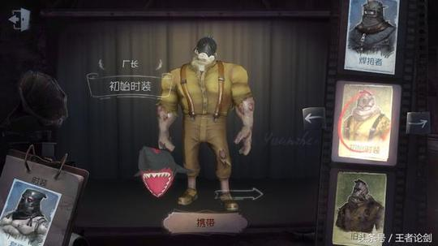
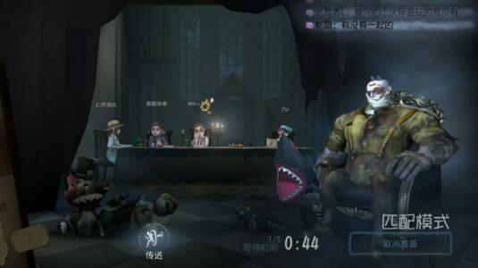

廠長

【人物介紹】
名字：里奧‧貝克
里奧‧貝克原本是經營紡織廠的小型工廠主，在接受朋友弗雷迪萊利的建議後，購入了負債累累的小型槍械工廠。
【能力介紹】
傀儡操控（二階段解鎖）：廠長擺弄的傀儡與其有莫名聯繫；點擊放置或蓄力拋出後，傀儡能感應周圍求生者並提醒廠長；廠長能與傀儡互換位置並短暫加速；傀儡可被求生者拆除，拆除期間無法互換。
多重傀儡操控（三階段解鎖）：成功追擊求生者後，廠長有了第二個傀儡玩物——紅色只是沾染了更深的污漬。
